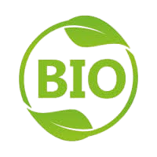
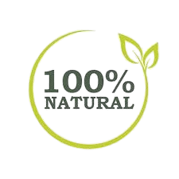

Authenticité, qualité etsavein-faire local
Située au cœur de Fquih Ben Saleh, cette ferme familiale produit une huile d'olive de qualité supérieure grâce à un savoir-faire traditionnel.
Un domaine reconnu pour ses oliviers soigneusement entretenus et son engagement envers une agriculture durable et respectueuse de l'environnement.
Certifiee biologique, cette ferme propose une huile d'olive naturelle, sans produits chimiques, issue de récoltes selectionnees.


Les olives sont récoltées à la main au moment optimal pour garantir une qualité exceptionnelle.
Les olives sont pressées à froid afin de préserver toutes leurs propriétés nutritives et leur goût authentique.
L'huile est soigneusement filtrée pour assurer sa pureté et sa clarté.
L'huile est conditionnée avec soin dans des bouteilles adaptées pour conserver toute sa fraîcheur.